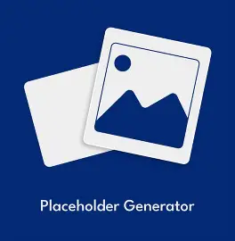

Original Concept
This website started as an idea to create a personal portfolio and blog. I wanted a space to showcase my projects, share tech tips, and express my interests in music and technology. The initial designs were sketched on paper before any code was written.
Design Philosophy
The design philosophy centered around simplicity, readability, and visual appeal. I chose a dark theme with accent colors to create a modern look while ensuring content remains easy to read. Consistent styling across pages was a priority.

Technical Stack
The website is built using pure HTML, CSS, and JavaScript without frameworks. This choice was intentional to learn the fundamentals deeply. Custom animations, responsive layouts, and interactive elements were all hand-coded.
Challenges Faced
Building this website came with challenges including responsive design, browser compatibility, and organizing content effectively. Each challenge was an opportunity to learn and improve my skills as a web developer.
Future Plans
This website will continue to evolve as I learn new technologies and create new projects. Future improvements might include a blog section, more interactive features, and perhaps a backend for dynamic content. The journey is just beginning.